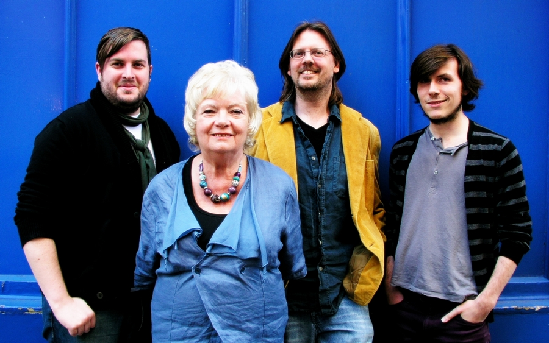
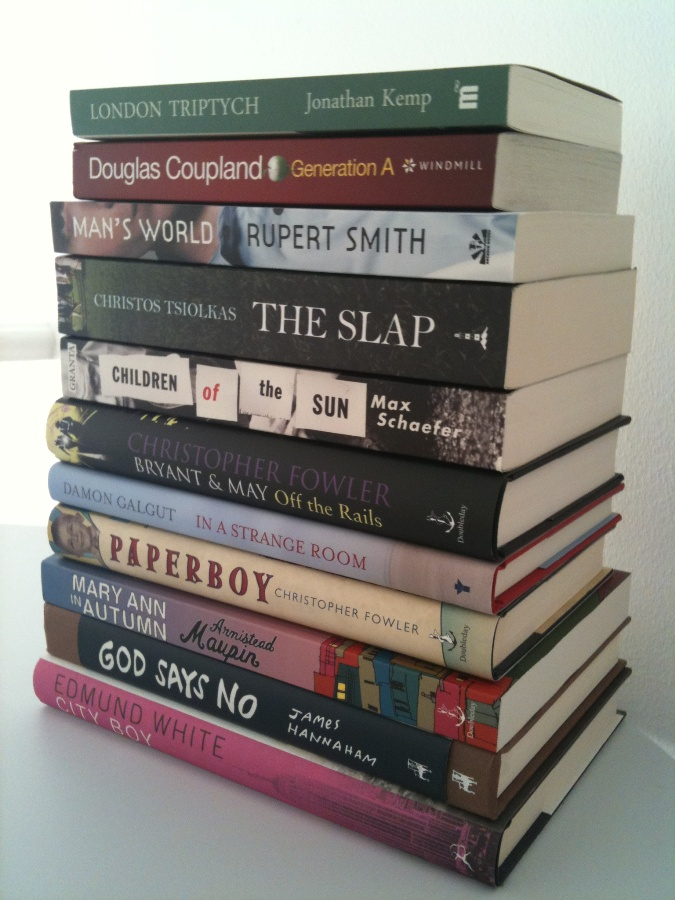

So yesterday the 31st of August was officially long listing night seeing the judges Paul Magrs, Nick Campbell, Lesley Cookman, Katy Manning and Simon Savidge all get together (one via Skype) to whittle the submissions into ‘The Green Carnation Longlist 2010’.
{kind=link}

The Green Carnation Judges Simon Savidge, Lesley Cookman, Paul Magrs and Nick Campbell (Katy Manning joined in via Skype)
After a good few hours of discussion, lively debate and lots of laughter the judges came up with not ten, but eleven, books they felt reflected a really diverse and interesting list of books from 2010 past present and future that they are all looking forward to getting back to and re-reading. And this years ‘Green Carnation Bunch’ are…
{kind=link}

The Green Carnation Longlist 2010
- Generation A by Douglas Coupland (Windmill Books)
- Bryant and May Off the Rails by Christopher Fowler (Doubleday)
- Paperboy by Christopher Fowler (Doubleday)
- In A Strange Room by Damon Galgut (Atlantic Books)
- God Says No by James Hannaham (McSweeney’s)
- London Triptych by Jonathan Kemp (Myriad Editions)
- Mary Ann in Autumn by Armistead Maupin (Doubleday)
- Children of the Sun by Max Schaefer (Granta)
- Man’s World by Rupert Smith (Arcadia Books)
- The Slap by Christos Tsiolkas (Tuskar Rock Press)
- City Boy by Edmund White (Bloomsbury)
The judges decided not to release an official statement about the long list or each and every title and why they were chosen as they feel if people read the list then the books will speak for themselves. The list does contain three debut novelists as well as some well known authors such as Douglas Coupland, Armistead Maupin and Edmund White; it also features two of this years Man Booker long listed titles from Damon Galgut and Christos Tsiolkas. Quite a mixture all in all and we hope you agree? The short list will be announced in exactly two months on November the 1st 2010.
So what are your thoughts on the very first Green Carnation Longlist/Bunch?
Photo of the judges, credit Dom Agius (www.domagius.com)